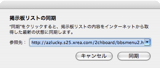
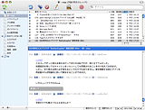
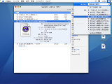

BathyScaphe について
BathyScaphe について
BathyScaphe アプリケーションを使って、２ちゃんねるやまちBBS、JBBS@ライブドアなどの掲示板を読み書きできます。●や Be ２ちゃんねるのアカウントを設定したり、好みに合わせて BathyScaphe を簡単にカスタマイズできます。
BathyScaphe を設定する
はじめて BathyScaphe を使用する場合は、まず「掲示板リスト」を作成して、よく行く掲示板に素早くアクセスできるようにします。ブラウザウインドウは、「2ペイン」と「3ペイン」を好みに応じて切り替えることができます。また、「ツールバーをカスタマイズ」したり、環境設定を使用したりして、BathyScaphe をカスタマイズできます。
スレッドを読む／書き込む
ブラウザウインドウで掲示板を選択し、スレッド一覧を表示します。任意のスレッドを選択し、内容を閲覧します。不快なレスや、荒らしによる書き込みを、迷惑レスフィルタを使って隠すことができます。「書き込み...」ボタンをクリックして、書き込みウインドウを開き、スレッドに書き込みます。BathyScaphe は自動的に名前欄・メール欄を記憶し、次回以降あらかじめ入力された状態で書き込みウインドウを開きます。
BathyScaphe と Mac OS X
BathyScaphe は Mac OS X の「AppleScript」や「Spotlight」、「キーチェーン」といったテクノロジーに対応しており、これらと連携してスマートな使い勝手を実現しています。
BathyScaphe のその他の機能
「BathyScaphe をリセット」機能を使って、プライバシーを守ることができます。また、履歴を使ってすばやくスレッドを移動したり、キーボードショートカットを使って効率的に操作することができます。